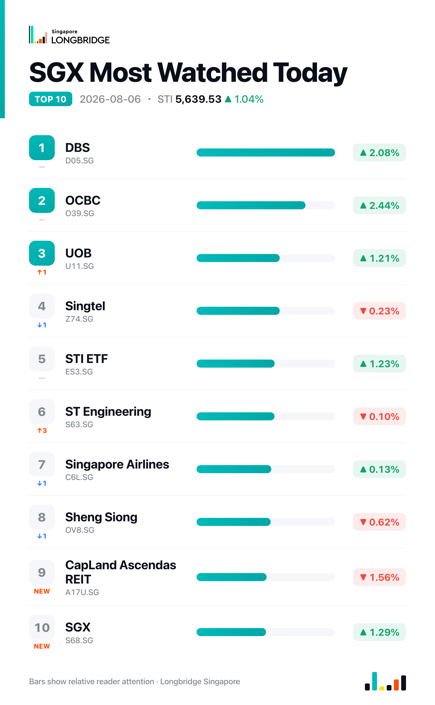

STI Climbs 1.04% to 5,639.53 as DFI Retail Leads Gains and MPACT Paces Declines
The Straits Times Index closed at 5,639.53 on Thursday, up 58.16 points, or 1.04%, after trading between 5,585.28 and 5,645.72 during the session. The advance was narrow: DFI Retail Group and the three local banks led gains, while 20 of the benchmark's 30 constituents closed lower and just eight advanced.
Thursday's move reversed Wednesday's pattern, when DBS, OCBC and UOB fell together for the first time in a run of otherwise split sessions. This time the three banks rallied in step — DBS up 2.08%, OCBC up 2.44% and UOB up 1.21% — after DBS reported a record quarterly net profit of S$3.08 billion, up 9%, and raised its full-year income guidance on the strength of its wealth management franchise. Shares touched an intraday all-time high of S$75.80. The read-through lifted sentiment across the banking group even as most of the rest of the STI basket traded lower.
Session Movers
DBS (D05.SG, +2.08%) posted its best-ever quarterly profit, with Q2 net income up 9% to S$3.08 billion on record first-half earnings and wealth management growth; assets under management in that business reached S$680 billion, en route to a S$1 trillion target by 2030. The board declared dividends of S$0.66 ordinary plus S$0.15 in capital returns, and shares — up 34% year-to-date — hit a record intraday high before closing at S$75.08. The stock trades at 3.03 times book, above its own five-year range, with a consensus Buy rating.
OCBC (O39.SG, +2.44%) advanced alongside its banking peers after entering a strategic partnership with Beijing-backed ZGC International to channel Chinese technology companies into ASEAN, gaining access to a network of more than 14,000 tech firms — building on a 50% year-on-year rise in the number of Chinese companies OCBC has supported expanding into the region in 2025. The bank also featured among the lenders on ESR Group's sustainability-linked refinancing facility, upsized beyond its original US$2 billion target. OCBC trades at 2.06 times book, above its five-year range, with a consensus Buy rating.
DFI Retail Group (D01.SG, +3.71%) was the session's best performer after reporting a first-half turnaround: underlying profit surged 44% to US$117 million on revenue up 4.3%, prompting management to raise full-year guidance. IKEA operating profit within the group jumped 85%, and the interim dividend was raised 77%. Parent Jardine Matheson separately reported first-half underlying profit up 9% to US$735 million, citing stronger contributions from DFI Retail among its units. DFI Retail carries a consensus Strong Buy rating, with a target price implying about 29% upside.
MPACT (N2IU.SG, -3.01%) was the session's biggest decliner, extending a slide that began after the trust reported a 2.5% drop in first-quarter DPU to S$0.0196 on July 30, as a weaker yen and Hong Kong dollar cut revenue 5.6% to S$206.5 million; portfolio occupancy held steady at 84.4%. DBS and CGS International have both maintained Buy ratings on the trust since, with target prices of S$1.65 and S$1.52 respectively, both above Thursday's S$1.29 close.

One point worth noting
Eight of the STI's 30 constituents rose on Thursday against 20 decliners, yet the index gained 1.04% — the mirror image of Wednesday, when advancers outnumbered decliners 13 to 12 but the index still fell 0.67%. Both sessions point to the same dynamic: the three banks and a handful of large-cap names are currently setting the index's direction, for better or worse, regardless of how the rest of the board trades.
This recap is for informational purposes only and does not constitute investment advice.